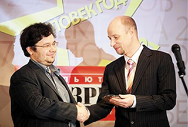

Интернет-магазин Perenoska.ua™ на сегодняшний день является наиболее популярным магазином в Украине!
Представительства нашей компании есть во всех областях Украины. Такого статуса нам удалось достичь благодаря максимально широкому ассортименту, разумной ценовой политике и отличному сервису.
Наша задача состоит не только в том, чтобы просто продать нужный товар, но и в том, чтобы информировать и просвещать покупателя. Для этого мы снимаем видеообзоры «горячих» новинок, готовим статьи и новости. Вооружившись всесторонней информацией об интересном устройстве usи его главных конкурентах, Вы сможете самостоятельно принять взвешенное решение о покупке именно того товара, который Вам нужен.
Наш сайт в среднем посещает более 800 000 уникальных посетителей в день, и это число продолжает расти. Не останавливаясь на достигнутом, мы продолжаем наращивать обороты, стремясь стать лучшим в стране порталом об электронике и бытовой технике — местом, где Вы сможете выбрать и приобрести любую технику — осознанно, недорого и удобно.

Лауреатами премии «Человек года 2007» в 10 профессиональных номинациях стали лучшие представители украинских и зарубежных компаний. Выбор и оценку номинантов осуществляют авторитетные эксперты ИТ-отрасли Украины — редакционный коллектив «Компьютерного Обозрения», поэтому премия «Человек года» уже много лет остается наиболее престижной для участников рынка. В номинации "За наибольший вклад в развитие рынка розничных продаж в 2007 г. победителем стал Владислав Чечеткин, руководитель проекта Perenoska.ua
Нашей главной целью и основополагающим принципом в работе является удовлетворенность клиентов — как розничных покупателей, так и организаций. С некоторыми компаниями мы сотрудничаем уже более 10 лет. При решении любых вопросов мы всегда на Вашей стороне, потому что понимаем — наше будущее на 100% в Ваших руках
Все товары в нашем магазине продаются с доставкой. Доставка в пределах Киева осуществляется в течении одного дня. Мы осуществляем доставку без предоплаты во всех областных центрах Украины. В этом случае Вы получите свой заказ уже на следующий день. Любой из наших товаров вы можете приобрести в кредит даже без первого взноса.
Все товары в нашем магазине сопровождаются гарантией. Подтверждением гарантии служит фирменный гарантийный талон. Мы дорожим своей репутацией, и поэтому сознательно не продаём неофициальный или нелегальный товар без гарантии и сервисной поддержки в Украине. В конечном итоге покупка продуктов сомнительного происхождения доставляет головную боль и для продавца, и для покупателя.